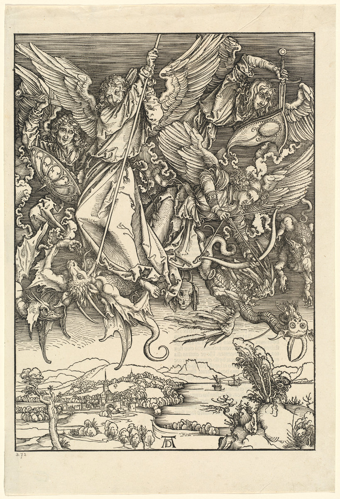

Asking the Wrong Questions
In Defense Of “Paranoia”
PROPOSITION: To be serious about politics in contemporary America is to be paranoid. What follows is intended as defense and explanation of this proposition.
Of course, we all know that paranoia, or the appearance thereof, is incompatible with seriousness within the American political profession. America’s political professionals (politicians, aides, journalists, and so on) are terrified that they might become vulnerable to the charge of paranoia. Tarred with that brush, you find yourself immediately in the company of the laughingstocks and villains of America’s political life. To be paranoid is to be grouped with moon landing denialists, tinfoil-hat wearing fluoride conspiracists, McCarthyesque alarmists, and all the other crackpot marginalia of American politics. To be paranoid is to embody an existential threat to American political culture as one who lacks faith in the rituals that undergird it, while simultaneously falling beneath the threshold of seriousness required to have one’s ideas engaged with as political rather than pathological. In short: once you are accepted as paranoid, you have already lost.
But how would one avoid the label? When is the accusation of paranoia applied, both successfully and not? Who is deemed a legitimate performer of this application? I am not here interested in the soundness of applying clinical concepts to political life, or even the accuracy of individual use-cases of paranoia accusations. Such questions are tangential to the task of determining who benefits from the discourse of political paranoia. Only once we understand who this discourse serves will we be prepared to grapple with the accusations of which it consists.
Paranoia as political element was codified on the American scene by Richard Hofstadter, the Columbia titan of liberal history, in his essay “The Paranoid Style in American Politics,” first published in 1964 but still used as a touchstone for those invoking political paranoia today. The essay arrived right as the Goldwater wave was cresting in the Republican party, with the memory of the second Red Scare still raw in the minds of America’s intelligentsiaThis, and further biographical observations about Hofstadter, are drawn from Richard Hofstadter: An Intellectual Biography, by David S. Brown.
. Hofstadter was following in the footsteps of postwar efforts to apply new developments in empirical psychology to the political worldThe most famous of these to the HOMINTERN reader is likely The Authoritarian Personality, produced by an Adorno-led team of sociologists, but the same trend can be seen in Arthur Schlesinger’s The Vital Center and George Kennan’s “The Sources of Soviet Conduct.” I feel safe in assuming that Hofstadter would have been at least familiar with the existence of both.
.
The Hofstadter of “The Paranoid Style” had already developed a reputation as liberal critic of both left and right, skeptical of what he saw as the grand narratives and stark moralities of both Marxism and the hawkish conservatism exemplified by McCarthy and Goldwater. Hofstadter himself began his adult life as a committed Marxist, remaining a card-carrying member of the Communist Party until the Molotov-Ribbentrop pact. His rightward motion accelerated upon the death in 1945 of his wife Felice Swados, who had remained a communist with fewer misgivings than Hofstadter. For Hofstadter, then, “The Paranoid Style” is not only a response to the political atmosphere of 1964 as seen from a Columbia office but also a repudiation of his younger self, whether intentional or unconscious. If we treat the application of the paranoia-label as speech act, Hofstadter’s essay is the model from which the functions and felicity-conditions of this speech act are drawn. By returning to it, we can find the discourse of American political paranoia at the baptismal moment.
Hofstadter, of course, recognizes that his psychologizing move is controversial. Right away, he attempts to make clear to make clear that he is “not speaking in a clinical sense, but borrowing a clinical term for other purposes.”This, and other quotations presented in the remaining discussion of Hofstadter, are taken from the version of “The Paranoid Style in American Politics” available archived online by Harper’s .
This vacillation, frozen halfway out the door of the clinic, is what allows Hofstadter to go on to say that, while the paranoid style is meant to be pejorative, “nothing really prevents a sound program or demand from being advocated in the paranoid style.” If Hofstadter’s use was entirely clinical, he would be unable to emphasize the pejorative character, while if he abandoned the clinic entirely he could not use the “diagnostic” form to conveniently sidestep questions of accuracy or, God forbid, justice. Hofstadter’s equivocation here is so fundamental that we readers learn of this unique position of the “paranoid style” before learning anything at all about the style itself.
Those hoping for a direct definition will have to wait a bit longer. Hofstadter first gives us a convenient list of those he takes to use it:
…the anti-Masonic movement, the nativist and anti-Catholic movement, in certain spokesmen of abolitionism who regarded the United States as being in the grip of a slaveholders’ conspiracy, in many alarmists about the Mormons, in some Greenback and Populist writers who constructed a great conspiracy of international bankers, in the exposure of a munitions makers’ conspiracy of World War I, in the popular left-wing press, in the contemporary American right wing, and on both sides of the race controversy today, among White Citizens’ Councils and Black Muslims.”
Note the careful attention paid to balance: each roughly “left”-aligned example counterbalanced by a corresponding example from the “right.” Hofstadter goes on to discuss the anti-Masonic and anti-Catholic movements, less identifying features of the paranoid style than highlighting notions of conspiracy as if to suggest that the irrationality of these theories ought to be obvious. Eventually, however, he does give us some direct characterizations. The paranoid spokesman is “apocalyptic,” he avoids compromises, he demands “total triumph.” The enemy designated by the paranoid spokesman is always powerful, conspiratorial, in control. To the paranoiac, politics appears not as a site of reasoned compromise and bureaucratic-administrative rationality but as a deeply consequential sphere, one indeed in which the consequences of incorrect action might be catastrophic. While the idea of dire global consequences might seem reasonable to those of us living under the threat of nuclear war and climate collapse, Hofstadter seems to think this attitude so obviously ridiculous that he can simply present it without comment.
After tarrying briefly in clumsy quasi-Freudian attempts to find projection and sexual neurosis in the political paranoiac, Hofstadter presents us with a shocking and illuminating passage. He tells us in a seemingly unworried tone that the paranoid style might involve an “almost touching concern with factuality” involving the obsessive accumulation of “evidence” (the scare quotes are Hofstadter’s addition.) What then distinguishes the “evidence” accumulated by the paranoiac from that of others? The paranoiac does not use this evidence as a “means of entering into normal political controversy.” The issue is not at all with the veracity or comprehensiveness of the evidence itself, but with the very fact that this evidence is being used to suggest that the processes of “normal political controversy” are somehow compromised or inadequate. To question the legitimacy of the process is itself the deviation.
Hofstadter’s invocation of the Populist party is useful here. The paranoid sin of the Populists was their suggestion that the international rich and powerful were colluding or conspiring to ensure their continued power and wealth. In the Populist narratives, this malevolence centered around the issue of “free silver.” As it turns out, evidence exists that such conspiratorial action was in fact taking placeDeCanio, S. (2011). Populism, Paranoia, and the Politics of Free Silver. Studies in American Political Development, 25(1), 1-26.
, on an even larger scale than imagined by most Populists. Hofstadter, with his well-known aversion to archival workHofstadter dismissed those who criticized his work along similar lines as “archive rats.”
, would have had no real way of knowing this. Even so, his engagement with the text he quotes alone is puzzling. Hofstadter insists on reading a brute literalism into the passage, assuming that the Populists are using the language of conspiracy not to dramatically illustrate a shared class interest among wealthy financiers but as a literal indictment of a handful of people secretly operating the levels of powerIt seems relevant to note that such literal interpretation of social metaphors is a classic feature of paranoid delusion, seen in (for instance) the Freudian literature surrounding the Schreber case.
. Hofstadter takes for granted that such divisive claims could only result from the paranoid style.
Some part of Hofstadter’s stance must have been motivated by the affinity of Charles Beard and his fellow progressive historians for the Populists. Beard, himself a Columbia historian, had advocated a reading of American history emphasizing the role of economic factors and class struggle in the development of political life. Hofstadter’s first prominent book, The American Political Tradition, was received as an attempt to locate a thread unifying the major political actors of American history, by contrast to the conflict-centered readings favored by the progressive historians. So, we may now add an anxiety of influence to Hofstadter’s insecurity about his Marxist past and his fear of McCarthyian anti-intellectualism, all joined together to mount a tripartite assault on Hofstadter’s identity as a liberal intellectual. His attempts to invent a procedure with which he could defend the legitimacy of American political ritual must also be seen as attempts to do the same for his own sense of self. That this doubly defensive project would give birth to a crutch for the insecurities of American liberalism is hardly surprising.
Any attempt to exhaust or even survey the employment of paranoia-accusation from 1965 onward would far overflow the bounds of this article, but I can briefly point to some highlights in recent memory. The election of Donald Trump prompted the proliferation of op-eds making explicit reference to Hofstadter’s work, all following roughly the same lines: Trump is denying or flaunting the legitimacy of our political rituals in a way that signals paranoiaConor Lynch, “Paranoid Politics: Donald Trump’s style embodies the theories of a renowned historian,” Salon, 7 July 2016. Thomas G. Edsall, “The Paranoid Style in American Politics is back,” New York Times, 8 September 2016. Paul Musgrave, “Donald Trump is Normalizing Paranoia and Conspiracy Thinking in U. S. Politics,” Washington Post, 12 January 2017.
. Compare this mini-ecosystem with the dearth of applications of the paranoia-analysis to the tenacity with which some establishment Democrats have clung to the narrative of Russian interference in US politics. While some attempts have been made, perhaps most prominently by Ross Douthat in the pages of the New York Times, the charge seems like it cannot gain traction outside such publications as the National ReviewJonathan S. Tobin, “The Paranoid Style in Anti-Trump Politics,” National Review, 12 February 2017. Ross Douthat, “The Paranoid Center,” New York Times, 26 March 2019.
. Shortly before the 2016 election, the NYT ran an opinion piece fretting that Trump might attack the legitimacy of the election in the paranoid mode if his loss was close, and suggesting that even forwarding such an idea would be catastrophic. This and other similar sentiments, not uncommon among the commentariat, seemed to conveniently disappear upon Trump’s election. The most prominent recent backlash against the Russiagate discourse has been directed at Hillary Clinton’s comments about Tulsi Gabbard, comments in which Clinton also referred to Jill Stein and unspecified others as Russian assets. Apparently, Clinton’s liberty with accusation crossed the invisible line.
All these invocations of paranoia have not gone unnoticed by the publications of the American left. Last November, The Baffler ran a piece by Kathryn Olmsted, a history professor at UC Davis, in which she looks at the adoption of Hofstadter as the “pundit’s favorite historian.” Her piece, unfortunately, unfolds from an account of the dubious uses of paranoia-analysis into a defense of Hofstadter’s original conception, deployed yet again against Donald Trump. The article winds up repeating Hofstadter’s account of paranoid reasoning as involving a “big leap” from carefully assembled evidence and facts into wild conjecture. However, as in Hofstadter’s essay, Olmsted assesses the size of a “leap” based solely on whether it would imply something too dire about the American government. The ideas that the FBI might be inclined to assist the Russia probe out of a dislike (or fear) of Donald Trump, or that people in the Bush administration might have deliberately failed to prevent the 9/11 attacks, are themselves so disruptive to the legitimacy of American political goings-on that any chain of reasoning terminating in these ideas must have involved a “big leap.” In a country where a planned false flag attack on the United States by Cuba was considered with enough seriousness to make its way to the desk of the president, can we really treat the possibility of deception and malicious intent with such incredulity? Here, we have a nominally-leftist publication answering with a bold affirmative.
Perhaps the most recent events to prompt the accusation of a paranoid style have been the revelations surrounding Jeffery Epstein and his death. Epstein, a procurer for a pedophilic ring of unknown size, was well-connected, with personal access to the ears of wide swathes of America’s political and corporate elite. These details alone would be cause for suspicion about the circumstances of his death, and such suspicion is only compounded by former Secretary of Labor Alex Acosta’s claim that he dropped the case against Epstein in 2008 because Epstein “belonged to intelligence.” Epstein, on the official account, knelt hard enough to give himself multiple neck bone fractures, with this multiplicity quickly kicked aside in favor of a myopic focus on the hyoid. Suspicion could not be tolerated. The Washington Post ran a piece with the headline “Epstein conspiracy theories showcase the paranoid style in American politics” a mere two days after his death, while the L.A. Times had managed to produce an op-ed the day before, assuring the public that any explanation of Epstein’s death other than suicide is sensational and far-fetched. The latter assembles evidence about the rates of suicide in pre-trial custody (with care that Hofstadter would call paranoid) before making a wild leap from these population statistics to the case of Epstein in particular, ignoring any reasons one might have to believe that his case was not exactly normal. There is by no means a preponderance of evidence that Epstein was murdered. But the speed and severity with which mainstream publications sought to pathologize any skepticism towards the official narrative is a symptomatic crystallization of the function of the paranoid style.
With my evidence marshalled and arranged like any good paranoid, I might now attempt to describe the function of the paranoid style. Ever since its inception, the primary feature that makes one suspect to this accusation is the willingness to suggest that the legitimate sphere of political action is not coterminous with American political procedure and ritual. Russiagate is not paranoid until it moves from suggesting that Hillary Clinton is in fact the legitimate president to indicting both parties as filled with Russian agents in numbers rivalling McCarthy’s infamous list. The move does not cross some Rubicon of irrationality: if the Russian government has the means to implant an asset in the presidency (and, to hear some tell it, the office of the Senate majority leader), it does not strike me as ridiculous to conclude that they might have been successful in their infiltrations elsewhere. However, the former is a move that remains comfortably within the existing system, of which Clinton is perhaps the best single representative, while the latter seems to imply that none of our political processes can go without suspicion. And that, for the system which this discourse acts to protect, is a bridge too far.
The end result of the discourse of political paranoia, perhaps even its goal, is the complete naturalization of American political life and the world that it has produced. To suggest otherwise is pathological. To look at the class interest of the Founding Fathers and the subsequent curious affinity of the United States for capitalism is pathological. America is a colonial project whose government is still controlled by the colonizers, a country that could easily be spoken of in the same breath as Rhodesia and apartheid South Africa, but because we are in America and not Africa this is by necessity natural, unless you’re paranoid or something. The richest man in the world is an American doing his best to observe, regulate, and monetize daily life until we are all as efficient and profitable and dehumanized as one of his warehouse employees, but of course any leniency or affinity or indifference shown to him by the government cannot be a result of either his massive power or bourgeois class solidarity, because what the government does is natural. If anthropogenic climate crisis was in fact likely to lead to the suffering of millions and our politicians were responding with apathy and incompetence, the fate of our world would be at stake – sounds like the paranoid style to me. When a well-connected pedophile,whose intelligence ties have been confirmed by a cabinet member, dies unwatched in custody on the verge of a trial that might reveal which of his many powerful friends were also his clients, we cannot suggest that this was accomplished by any of the many people who might stand to gain, because the state PR channels said so, and we can’t just say they’re lying to us or themselves deceived, what are you, paranoid?
The valiant standard-bearers of deliberative reason who dutifully apply the diagnosis of the paranoid style live in a much happier world, where the tools for solving our problems are clear and available to us and the only question is which people should be using them. This pastoral vision comes at the small cost of a studied ignorance towards everything that is horrifying and disgusting within American politics. The uncritically paranoid reflex of an Alex Jones is little better, decrying the state as deformed and corrupt without providing a revolutionary politics to match. As communists, we cannot afford ourselves either luxury. If the ruthless critique of everything existing requires that we discuss realities whose acknowledgement is deemed pathological, then I am proud to employ the paranoid style. Hofstadter’s work has only become such a potent tool because those who hold power in America have less than ever to fear. We can make them paranoid again.

L.A. LEERE is an editor at HOMINTERN.